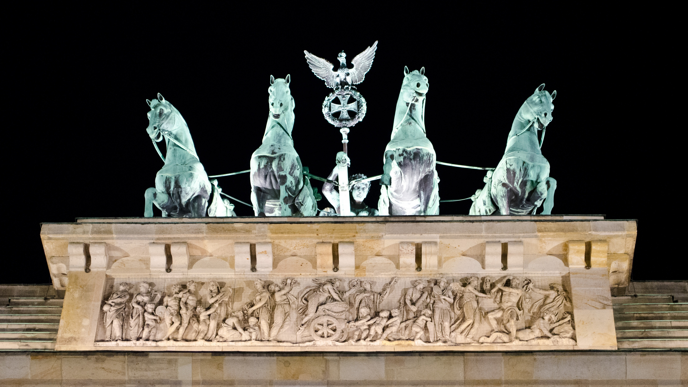

First time Berlin appears in recorded history is in 1244
By: David Chaves Rodríguez :)
Update: 18/10/2022
The city was successively the capital of Prussia, the German Empire, the Weimar Republic and the Third Reich
Allied aerial bombing while WWII cost Berlin about 52000 people
Berlin saw itself divided in 1920
During the 90s massive construction projects transformed Berlin